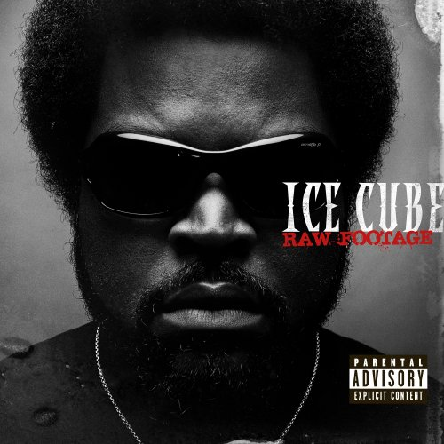

힙합(Hip hop)은 1970년대 미국 뉴욕의 브롱스에서 유행하기 시작한 춤과 대중음악으로부터 파생된 거리문화이다. 미국 뉴욕의 브롱스에서 아프리카계 미국인과 캐리비안 미국인, 히스패닉계 주민의 커뮤니티에서 행해지고 있었던 블록 파티에서 태어난 문화이다.
아프리카계 미국인들의 문화(음악, 패션, 예술)등 전반적인 삶의 양식을 조합하여 새로운 스타일을 만들어 내는 방식을 힙합(hip도 hop도 튀는, 생기있고 활발하게 움직인다 라는 뜻의 약동하는 의미를 갖고 있다)이라고 호칭하기 시작하였으며, 이때가 1974년 11월이었다. 이것으로 하여 11월을 ‘힙합 역사의 달’(Hip Hop History Month)로 축하하는 관습이 생겨났다.
힙합의 초기에는 팝, 펑크, 래게, 소울, 재즈 등 대중음악에서 추출한 샘플링이나 프로그래밍을 중심으로 한 트랙을 녹음해서 블록파티에 즉흥적인 춤판에 쓰다가, 음악을 틀던 디제이들은 곡 중간중간에 관중들을 향해 분위기를 맞추기 위해 이런 저런 말들이나 후렴구 도는 미사여구들을 뱉었는데, 그것이 차차 디제이로부터 분화되어 스테이지 위에서 사회를 보는 역할이 따로 만들어져 엠씨 또는 랩퍼가 생겨났고, 그러므로 랩 (음악)랩이라는 개념이 탄생하였다.
힙합을 흔히들 “랩”만을 의미 하는것으로 생각 하는 사람이 많은데 원래 힙합은 힙합은 음악, 춤, 패션, 언어 등을 모두 포괄하는 일개의 문화를 지칭하는 개념이다.
90년대는 힙합이 미국 대중음악의 중심 중 하나의 축을 형성하게 된 시대라고 보아도 무방할 것이다. 밀리언 셀러들이 속속들이 등장하고 슈퍼스타라고 이야기 될 만한 아티스트의 등장 그와 함께 수많은 사건, 사고 등 90년대부터 힙합은 누구도 부정할 수 없게 미국을 대표하는 음악 중 하나로 성장한다. 대표적인 아티스트와 앨범은 다음과 같다. 아이스 큐브의 "AmeriKKKa’s Most Wanted", 어 트라이브 콜드 퀘스트의 "The Low End Theory", 우탱클랜의 "Enter The Wu-Tang (36 Chambers)", 닥터 드레의 "The Chronic", 스눕 도기 독의 "DoggyStyle", 나스의 "Illmatic", 노토리어스 B.I.G의 "Ready to Die", 투팍의 "All Eyez on Me", DMX의 "It’s Dark and Hell Is Hot", 제이 지의 "Vol.2… Hard Knock Knock Life" 등이 있다.
2000년대의 힙합은 기존의 기틀을 바탕으로 더 많은 상승가도를 달린다. 제이 Z와 나스는 누가 뉴욕의 왕인가를 두고 자신들의 앨범에서 서로를 향한 공격을 쏟아내고, 에미넴은 닥터드레의 지원과 함께 단순히 미국이 아닌 세계적인 스타로 성장한다. 50센트는 데뷔 앨범을 발매 년도에 600만장이나 팔아버린다. 카니예 웨스트 또한 이 시기에 등장하여 자신의 수 많은 음악 스타일을 보여주고 Jay Z의 "The Blueprint"를 돕는다. 또한 T.I., 영 지지, 릴 웨인을 중심으로 남부 힙합은 그 어느 때보다 시장에서 높은 점유율을 차지한다. 남부 힙합의 등장과 지배는 음악적, 문화적 요소를 포함하여 힙합의 많은 부분을 변화시켰다. 특히 이 시기에 에미넴, 릴웨인은 단순히 힙합 슈퍼스타로 머무는 것이 아니라 하나의 아이콘이 된다.
2010년대 힙합은 기존의 모습을 가지면서도 수 많은 형태로 표현된다. Drake는 논란 속에 기존 힙합에서 등한시 되던 감성적인 측면을 자신의 앨범으로 적극적으로 들여오고 수 많은 형태의 음악을 보여준다. 속삭이는 듯한 클라우드 랩 또한 등장하고 랩이라는 것의 형태가 매우 다양해진다. Nicki Minaj는 남성중심적인 힙합에서 여성 랩퍼지만 최고에 자리에 존재한다. Kendrick Lamar는 한 동안 메인스트림 힙합에서 멀어졌던 현실 비판적 요소를 다시 중심으로 도입하고자 노력한다. Kanye West는 그의 음악과 패션, 여러 구설수를 낳은 행동과 함께 대중문화 아이콘으로 자리매김한다.
대표적인 앨범으로는 카니예 웨스트의 "My Beautiful Twisted Fantasy", 드레이크의 "Take Care", 켄드릭 라마의 "good kid, m.A.A.d city", 니키 미나즈의 "The Pinkprint", Chance The Rapper의 믹스테잎 "Coloring Book"등이 있다.
이후 힙합은 서부·동부·남부 등 각 지역별로, 올드 스쿨·골든 에이지 등 시대별로, 재즈 힙합·G-Funk 등 음악적 구분에 따라 수많은 종류로 세분화되어 발전해갔으며, 이후 미국 음악에서 결코 빠질 수 없는 중요한 장르가 되었다.